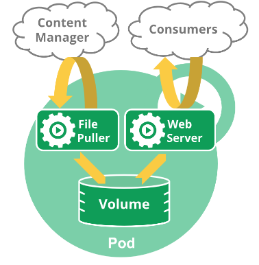
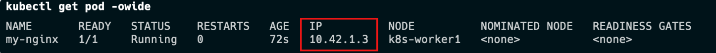
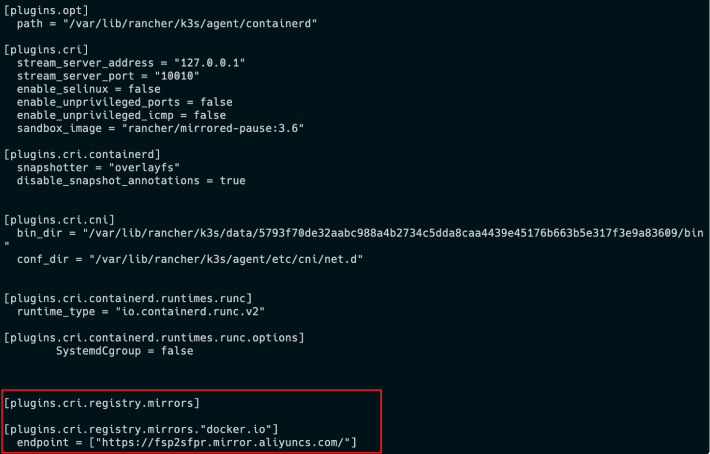

Pod(容器集)
Pod
Pod 是包含一个或多个容器的容器组，是 Kubernetes 中创建和管理的最小对象。 Pod 有以下特点：
- Pod 是 kubernetes 中$\color{red}{最小的调度单位}$（原子单元），Kubernetes 直接管理 Pod 而不是容器。
- 同一个 Pod 中的容器总是会被自动安排到集群中的$\color{red}{同一节点}$（物理机或虚拟机）上，并且$\color{red}{一起调度}$。
- Pod 可以理解为运行特定应用的“逻辑主机”，这些容器共享存储、网络和配置声明(如资源限制)。
- 每个 Pod 有唯一的 IP 地址。 $\color{red}{IP 地址分配给 Pod}$，在同一个 Pod 内，所有容器共享一个 IP 地址和端口空间，Pod 内的容器可以使用 localhost 互相通信。
例如，你可能有一个容器，为共享卷中的文件提供 Web 服务器支持，以及一个单独的 "边车 (sidercar)" 容器负责从远端更新这些文件，如下图所示：

创建和管理 Pod
# 创建 mynginx pod 并使用容器镜像 nginx 的 1.22 版本
kubectl run mynginx --image=nginx:1.22
# 查看Pod
kubectl get pod
# 查看pod日志
kubectl logs -f mynginx
# 查看pod描述信息
kubectl describe pod mynginx
- 访问 pod
# 查看Pod详细信息(包含IP和运行节点信息)
$ kubectl get pod -owide
NAME READY STATUS RESTARTS AGE IP NODE NOMINATED NODE READINESS GATES
mynginx 1/1 Running 0 14m 10.42.2.5 k3d-demo-server-0 <none> <none>
- 获取到访问的内容
# 使用Pod的ip+pod里面运行容器的端口
curl 10.42.2.5
# 或使用 wget
wget -qO- http://10.42.2.5
- 容器中执行命令
#在容器中执行
kubectl exec mynginx -it -- /bin/bash
#进入容器访问自身
curl localhost
- 运行 pod，退出后自动删除容器
# 运行 busybox 容器
kubectl run my-busybox --image=busybox -ti --rm
# ping 主机ip
ping {{host_ip}}
# 退出
exit
# 发现 pod 已不存在
kubectl get pod
- 删除容器
# 删除 mynginx
kubectl delete pod mynginx
# 强制删除
kubectl delete pod mynginx --force
- watch 模式
kubectl get pod --watch

镜像加速
由于 kubernetes 从V1.24版本开始默认使用containerd，需要修改containerd的配置文件，才能让 Pod 的镜像使用镜像加速器。
配置文件路径一般为/etc/containerd/config.toml，详见阿里云镜像加速。
在 K3s 中配置镜像仓库
K3s 会自动生成 containerd 的配置文件/var/lib/rancher/k3s/agent/etc/containerd/config.toml,不要直接修改这个文件，k3s 重启后修改会丢失。
为了简化配置，K3s 通过/etc/rancher/k3s/registries.yaml文件来配置镜像仓库，K3s 会在启动时检查这个文件是否存在。
我们需要在每个节点上新建/etc/rancher/k3s/registries.yaml文件，配置内容如下：
mirrors:
docker.io:
endpoint:
- "https://fsp2sfpr.mirror.aliyuncs.com/"
重启每个节点
systemctl restart k3s
systemctl restart k3s-agent
查看配置是否生效。
cat /var/lib/rancher/k3s/agent/etc/containerd/config.toml

容器与镜像
容器运行时接口（CRI）
Kubelet 运行在每个节点(Node)上,用于管理和维护 Pod 和容器的状态。 容器运行时接口（CRI）是 kubelet 和容器运行时之间通信的主要协议。它将 Kubelet 与容器运行时解耦，理论上，实现了 CRI 接口的容器引擎，都可以作为 kubernetes 的容器运行时。
Docker没有实现（CRI）接口，Kubernetes使用dockershim来兼容docker。
自V1.24版本起，Dockershim 已从 Kubernetes 项目中移除。
crictl是一个兼容 CRI 的容器运行时命令，他的用法跟 docker 命令一样，可以用来检查和调试底层的运行时容器。
crictl pull mysql:5.7-debian
crictl images
在一些局域网环境下，我们没法通过互联网拉取镜像，可以手动的导出、导入镜像。
crictl 命令没有导出、导入镜像的功能。
需要使用 ctr 命令导出、导入镜像，它是 containerd 的命令行接口。
- 从
docker导出镜像再导入到containerd中
docker pull alpine:3.16
docker save alpine:3.16 > alpine.tar
#kubernetes使用的镜像都在k8s.io命名空间中
ctr -n k8s.io images import alpine.tar
- 从
containerd导出、导入镜像
#导出镜像
ctr -n k8s.io images export mysql.tar docker.io/library/mysql:5.7-debian --platform linux/amd64
#导入镜像
ctr -n k8s.io images import mysql.tar
参考文档：
https://kubernetes.io/zh-cn/docs/concepts/workloads/pods/
https://kubernetes.io/docs/reference/generated/kubectl/kubectl-commands
https://kubernetes.io/zh-cn/docs/tasks/debug/debug-cluster/crictl/
https://docs.k3s.io/installation/private-registry